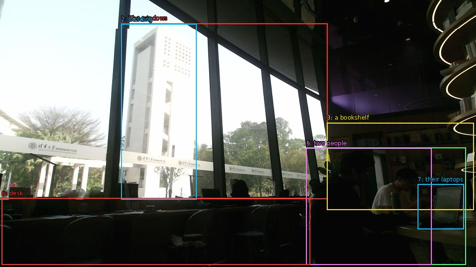

The image shows the interior of a modern office space with large windows that offer a view of the city. The windows are made of glass and allow natural light to enter the space. Through the windows, we can see a tall building and trees outside. On the right side of the image, there is a bookshelf with books and other office supplies. In the foreground, there are two people sitting at a desk, working on their laptops. The image is taken from a low angle, looking out onto the city skyline. The overall atmosphere of the space is bright and airy.

Original · Caption raw · Grounding raw · Koordinate
Številke so lokalni ID regije. Dolge slikovne oznake so skrajšane; spodaj so celotne fraze. Napovedane regije se lahko prekrivajo ali opisujejo skupine.
| ID | Celotna fraza | bbox xyxy |
|---|---|---|
| 1 | The windows | [244.3199920654297, 47.25, 660.0, 402.030029296875] |
| 2 | building | [244.3199920654297, 48.87000274658203, 396.9599914550781, 403.1100158691406] |
| 3 | a bookshelf | [659.0399780273438, 248.1300048828125, 955.6799926757812, 424.1700134277344] |
| 4 | two people | [617.760009765625, 298.8900146484375, 939.3599853515625, 535.4100341796875] |
| 5 | two people | [617.760009765625, 299.9700012207031, 870.239990234375, 535.9500122070312] |
| 6 | desk | [3.359999895095825, 400.95001220703125, 625.4400024414062, 535.9500122070312] |
| 7 | their laptops | [842.3999633789062, 372.8700256347656, 935.5199584960938, 463.59002685546875] |